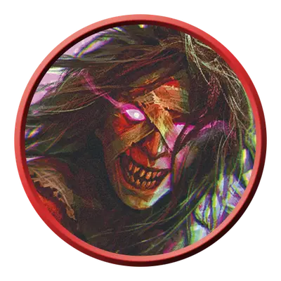

Изувер кошмар
Relentless Nightmare
Среднее Исчадие, Нейтральное Злое

Класс Защиты 17 Инициатива +8 (18)
Хиты 144 (17к8 + 68)
Скорость 30 футов
| мод | спас | ||
|---|---|---|---|
| СИЛ | 20 | +5 | +5 |
| ЛОВ | 18 | +4 | +8 |
| ТЕЛ | 19 | +4 | +8 |
| мод | спас | ||
|---|---|---|---|
| ИНТ | 13 | +1 | +1 |
| МДР | 16 | +3 | +3 |
| ХАР | 18 | +4 | +8 |
Иммунитеты Испуганный, Истощение, Очарованный
Чувства Тёмное зрение 120 футов, пассивное Восприятие 13
Языки знает Все, но не говорит
Опасность 11 (7 200 опыта; БВ +4)
Особенности
Легендарное сопротивление (2/день). Если кошмар проваливает спасбросок, он вместо этого может в нём преуспеть.
Кошмарное восстановление. Когда кошмар умирает, его тело превращается туман и спустя 1к10 дней заново возрождается с полными Хитами в ближайшем незанятом пространстве рядом с Бессознательным существом, которое проклято его Изводящим копьём. Эта особенность не срабатывает, если проклятых таким образом целей не осталось.
Действия
Мультиатака. Кошмар совершает две атаки Изводящим копьём. Он может заменить одну из этих атак использованием Изнуряющего взора.
Изводящее копьё. Бросок рукопашной или дальнобойной атаки: +9, досягаемость 10 фт. или дистанция 60 фт. Попадание: 14 (2к8 + 5) Колющего урона плюс 10 (3к6) Психического урона, и цель проклята. Пока это проклятие не окончено, завершение Долгого отдыха не снижает уровни Истощения цели.
Изнуряющий взор. Спасбросок Мудрости: Сл 16, одно видимое кошмаром существо в пределах 60 футов от него. Провал: 14 (4к6) Психического урона, и цель получает 1 уровень Истощения.
Легендарные действия
У этого существа есть 3 использования Легендарных действий; оно может немедленно после окончания хода другого существа потратить одно использование, чтобы совершить одно из следующих действий. Существо восполняет все потраченные использования в начале каждого своего хода.
Шаг сноходца. Кошмар телепортируется в незанятое пространство в пределах 5 футов от видимого им существа, а затем совершает атаку Изводящим копьём.
Дурманные грёзы. Кошмар выбирает целью одно видимое им в пределах 120 футов от себя существо, проклятое его Изводящим копьём. Цель получает 7 (2к6) Психического урона и становится Бессознательной на 1 час, либо пока не получит урон, либо пока существо в пределах 5 футов от цели действием не разбудит её.
Бонус мастерства +4
Среда обитания Любая
Сокровища Оружейные
Неумолимые изуверы
Связанные договором душегубы
Неумолимые изуверы — это искажённые силой исчадий маньяки, что возникают из смертных, заключивших сделку с нечестивыми силами. Способности их зависят от их собственных навязчивых идей и источника тёмного могущества.
Изувер кошмар насылает тёмную магию, погружая жертв в беспокойный сон, и только затем нападает. Если уничтожить такого душегуба, он способен возродиться из снов любого существа, отмеченного его проклятием.